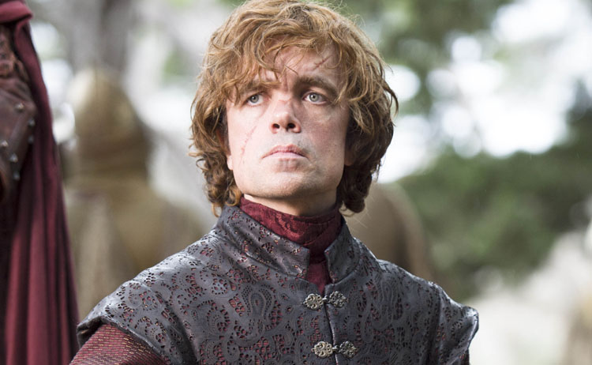

Tyrion Lannister
Tyrion Lannister é um dos personagens mais populares de Game of Thrones, conhecido por sua inteligência e sagacidade. Apesar de ser um anão, Tyrion supera as expectativas e se destaca em um mundo onde a aparência física é frequentemente usada para julgar o valor de uma pessoa.
Origens e Família
Tyrion é o filho mais novo de Tywin Lannister e irmão de Cersei e Jaime Lannister. Ele é frequentemente menosprezado por seu pai e irmã, mas encontra apoio e amor em sua família, especialmente de seu irmão Jaime.
Contribuições e Batalhas
Tyrion desempenha um papel crucial em várias batalhas e eventos políticos ao longo da série. Ele é conhecido por sua habilidade em estratégia e tática, e por sua capacidade de influenciar as pessoas ao seu redor.
Legado
Exploração do impacto de Tyrion Lannister na conclusão da série e seu legado em Westeros após o fim de Game of Thrones.